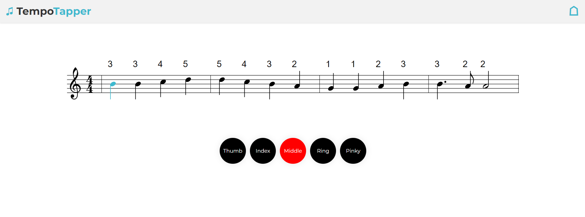

Blog 20: Final Website Touchups
Made more adjustments and changes to the website to make it more aesthetic, modern and usable.

Made more adjustments and changes to the website to make it more aesthetic, modern and usable.
Created the final finger sleeves to conceal the sensors and utilized velcro tape to keep them secure (again to make adjustments easier)


Began replacing the electrical tape with thread to make sure that the sensors, wiring and mount were all secure
Redesigined some of the frontend to encorporate Sheet Music API, better visuals, and make a more modern website.
Started adding final touches to cosmetics of the glove including reducing the wire lengths, testing functionality with finger sleeved and using velcro tape to attatch the sensors on the gloves. Velcro tape was used so that the position of the sensors could be easily changed.
Taped sensors to secure onto glove and tested device for final professor demo

Tested taping sensors to finger tips to see how real life application would work on sensors. Soldered inner connections onto MC and made sure sizing fit inside the mount

Created smaller versions of prototype to have it fit inside the wrist mount correctly, and got access to perf boards to be able to make wiring within the wrist mount more efficient

Created initial prototype for finger sleeve (wiring only) and tested sensor with this wiring. Was able to get accurate and precise detection of force when taping the sensor onto our finger tips and tapping the table (mimicking real use case)

Tested multiple force sensors at the same time with updated code. Performed successful tests of tapping all 5 sensors in isolation and tapping multiple sensors at the same time.
Started working on the results page graphs and analysis, completed initial website design creation
3D-printed our initial wrist mount for housing most of our electrical components
Bought new force resistive sensors and tested how well they operated. Worked a lot better than piezo in terms of sensing longer taps, but was definitely more sensitive
This week, our team spent time building out webpages for the initial iteration of the webapp. Some sample pages are shown below
The software part of our team completed the cross-correlation algorithm, merging of overlapping intervals algorithm, and computational accuracy functions, which are crucial to our project. They are needed to return to the user metrics of their accuracy and how well they played the given song.
Our team tested the piezo sensors purchased earlier with LEDs and resistors in order to determine their performance. It was found that there were 3 good piezos and 4 faulty ones. We also tested pressing multiple piezos at once as that is crucial to our project. We still need to figure out how to handle inconsistent sensor readings properly.
Today, we setup our laptop for working with MC using the Arduino IDE. This included installing the necessary drivers and arduino installations for our specific MC. Tested connection to MC by flashing the built in LED and printing to the Serial port

Today, the software side of the team worked on setting up the development environment for the project. As discussed in the PDP, the tech-stack we chose to use was a React.js frontend with a Node.js backend. Everything was set up correctly and fully functional. Below is a screenshot of the server-client connection working:
The parts we ordered (discussed in Blog 2) arrived in the mail today. The prototyping phase is to begin soon.
Today, our team met with Prof. Khamasee and Prof. Kennings for the introductory meeting to ensure that our team was on track. Everything went well, the current status and our goals/plans for the next few months were established.
Since our target design was finalized last term, our team was ready to order parts for the TempoTapper prototype. Today, we ordered the parts we needed for the project from Adafruit, the other parts were purchased elsewhere. Below is an image of the parts list ordered from Adafruit (cost is in USD):

During the first week, our team got together and attended the introductory capstone meeting to kick off our part 2 of the capstone project. During this meeting, we went over the expectations and course outline, as well as discussing the changes and schedule of the project.